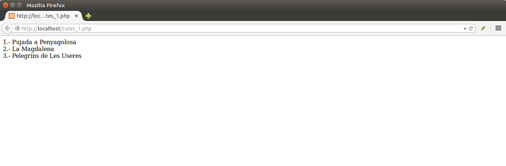
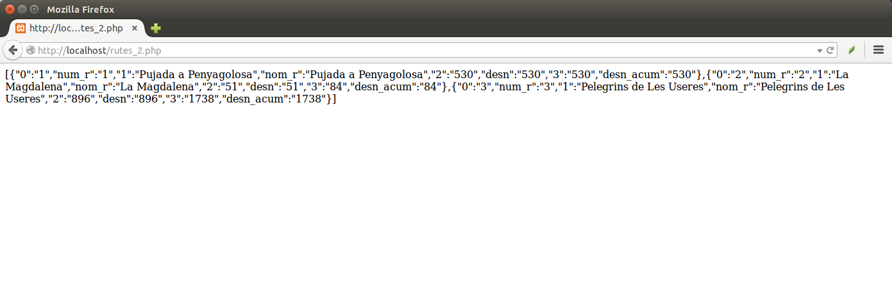

4.- PHP: Accés a les dades
PHP (Hipertext Preprocessor) és un llenguatge per a generar pàgines web que s'executa en el mateix servidor. No és com el JavaScript, que "viatja" des del servidor fins al client entre el codi HTML, i el navegador és qui l'executarà. En canvi PHP s'executa en el servidor, cosa que ens anirà bé per a que es faça la consulta a la Base de Dades, es genere el resultat i s'envie al client.
Teniu un pdf amb un resum de pdf. Són uns apunts prou antics, però únicament us hauríeu de fixar en la sintaxi de PHP.
En aquest annex ens centrarem únicament en la part de PHP que serveix per a accedir al SGBD, concretament a MySQL.
Per a connectar a MySQL, ho farem en 2 passos: primer connectarem al servidor i després ens connectarem a la Base de Dades:
- Per a connectar al servidor s'utilitza la funció mysqli_connect(), passant-li com a paràmetres el nom o l'adreça del servidor, l'usuari, la contrasenya i la Base de Dades a la qual connectar. Segurament l'usuari root no tindrà contrasenya, però això dependrà òbviament de la instal·lació que haureu fet
<?php
$con = mysqli_connect("localhost", "root","","Rutes");
?>
Per a accedir a les dades, executarem una consulta per mig de la funció mysqli_query(), a la qual li passem com a paràmetres l'identificatiu de la connexió i la consulta (prèviament haurem d'haver connectat i seleccionat la BD).
El resultat serà un cursor que podrem recórrer per mig de mysqli_fetch_array() sobre el cursor, cosa que ens donarà un array amb el contingut de la fila. El primer camp estarà en el subíndex 0.
$res = mysqli_query($con,"SELECT * FROM RUTES");
while ($fila = mysqli_fetch_array($res))
//tractament
Provem tot l'anterior en el següent exemple. Guardeu-lo per exemple com rutes_1.php en el servidor.
<?php
$con = mysqli_connect("localhost", "root","","Rutes");
$res = mysqli_query($con,"SELECT * FROM RUTES");
while ($fila = mysqli_fetch_array($res))
echo $fila[0] . ".- " . $fila[1] . "<br/>";
?>
El resultat serà el següent:

Ja estem accedint a la Base de Dades, i ens mostra el reultat de la consulta. Només ens queda guardar-lo en format JSON. Si no volem donar-li un format personal, és extraordinàriment senzill: ens creem un array on anem acumulant totes les files que venen del cursor (observeu de quina forma més curiasa es pot fer en PHP). Al final utilitzem la funció json_encode(), passant-li com a paràmetre aquest array
Guardeu el següent exemple amb el nom rutes_2.php, accediu des d'un navegador, i obtindreu les dades en JSON.
<?php
$con = mysqli_connect("localhost", "root","","Rutes");
$res = mysqli_query($con,"SELECT * FROM RUTES");
$json = array();
while ($fila = mysqli_fetch_array($res))
$json[] = $fila;
echo json_encode($json);
?>
I aquest seria el resultat:

Ens podem plantejar també accedir a aquest Web Service per a traure els punts d'una determinada ruta, també amb format JSON. El guardarem com a punts.php
La diferència amb el programeta anterior és que ara li ha d'arribar un paràmetre, amb el número de la ruta de la qual volem els punts. La manera més senzilla d'enviar és amb el mètode GET, que consisteix a passar-lo en la URL separat del nom de la pàgina per un interrogant, i posar el nom del paràmetre, un igual, i el valor del paràmetre. És a dir, que si volem els punts de la ruta 1, construirem la URL:
http://localhost/punts.php?num_r=1
Des de PHP, la manera d'agafar els paràmetres passats pel mètode GET és amb l'array $_GET. Per exemple si volem agafar el paràmetre num_r posaríem: $_GET["num_r"].
Guardeu el següent exemple amb el nom punts.php:
<?php
$con = mysqli_connect("localhost", "root","","Rutes");
$res = mysqli_query($con,"SELECT * FROM PUNTS WHERE num_r=" . $_GET["num_r"]);
$json = array();
while ($fila = mysqli_fetch_array($res))
$json[] = array_map('utf8_encode', $fila);
echo json_encode($json);
?>
I aquest seria el resultat. Observeu com en la URL hem posat el paràmetre num_r amb el valor 1.

Llicenciat sota la Llicència Creative Commons Reconeixement NoComercial CompartirIgual 2.5